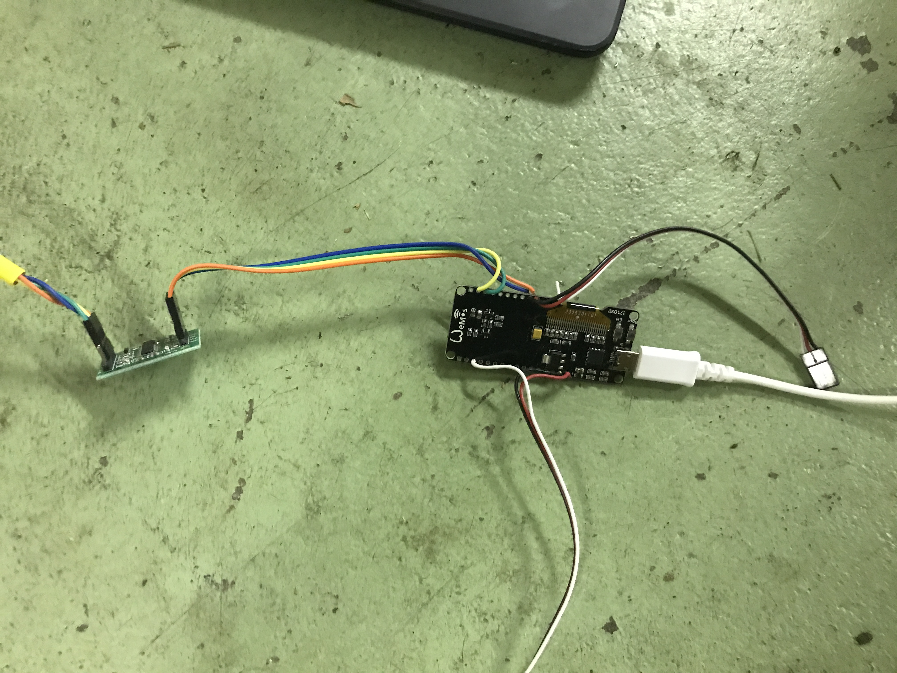

Warum Python
Einfacher Syntax
def foo(x): if x == 0: bar() else: foo(x - 1)Findet fast überall Verwendung
- IoT: Raspberry Pi

- Machine Learning: Netflix

- Web App (Backend): Instagram
- Web App (Frontend): -
- IoT: Raspberry Pi


Ein Beispielprojekt von mir:
Gleitschirm Leinenreissmaschine
 |
 |
 |
|  |  |